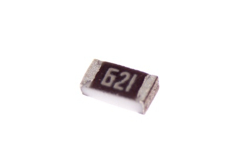

SMD (0603) 620 Ohm Resistor - R6621

Summary
Name: SMD (0603) 620 Ohm Resistor
ID: RESE-0603-X-O621-01
Hex ID: R6621
WebPage: https://github.com/oomlout/oomlout-OOMP/wiki/RESE-0603-X-O621-01
Short URL: http://oom.lt/R6621
Revision History: https://github.com/oomlout/oomlout-OOMP/blob/master/parts/RESE-0603-X-O621-01/
| Type |
Size |
Color |
Description |
Index |
RESE
Resistor |
0603
SMD (0603) |
X
|
O621
620 Ohm |
01
|
Images


About
This part is awaiting a description.
Specifications
| Info |
Value |
| Type |
Resistor |
| Size |
SMD (0603) |
| Description |
620 Ohm |
Extra Details
Spotted a mistake, want to add more? Let us know oomp@oomlout.com
All images and resources are licensed [CC BY-SA] unless otherwise stated (ie. the datasheets)